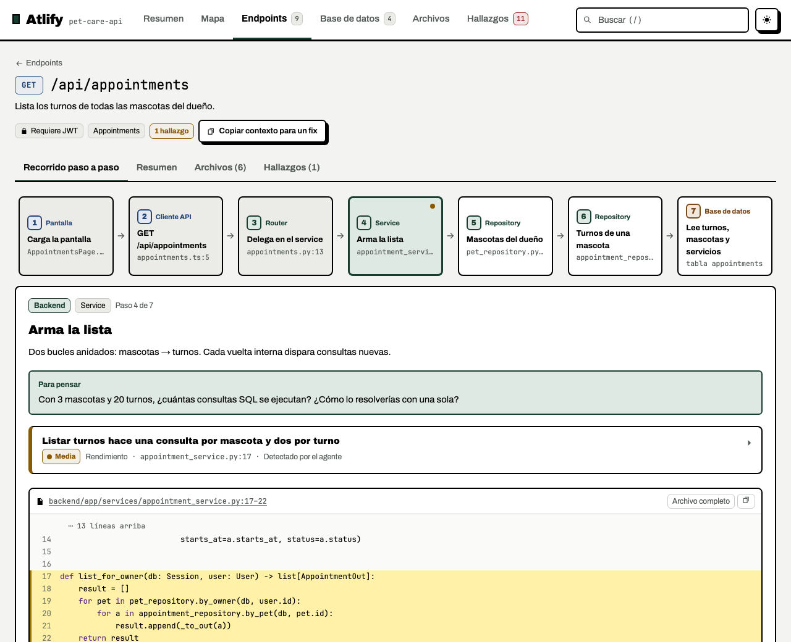

Entender el sistema
CompletoFrontend, backend, tablas y recorridos. En repos grandes, se trabaja por funcionalidad, no todo de una.
$atlify
Un skill para agentes de código
Por Miguel Caraballo
De la pantalla a la tabla, con el código en el medio. Atlify convierte un repo con API en un atlas que podés recorrer, estudiar y llevarte.
Ejemplo incluido en la demo
Usalo con tu agente.
Codex / Claude Code / Pi / OpenCode / Gemini CLI
El resultado, no la promesa
Un mapa para ubicarte. Un recorrido para entender. Hallazgos para saber qué revisar. Estas son vistas reales del atlas de pet-care-api, un repo de prueba con errores intencionales.

La demo ya está generada. No sube ni analiza tu repositorio.
Descargar el HTML de ejemploElegí por dónde entrar
Si heredaste el repo, mirá el sistema. Si el cambio es chico, enfocá el endpoint. Si lo armaste con IA, volvé sobre lo que quedó.
Frontend, backend, tablas y recorridos. En repos grandes, se trabaja por funcionalidad, no todo de una.
$atlify
El recorrido, las funciones compartidas, las tablas y las referencias a tests. Un mapa de impacto, no una garantía de que nada se rompe.
$atlify --endpoint "GET /api/appointments"Explorar el modo «Antes de tocarlo»
Repite la extracción, enumera diferencias y guía al agente para revisar el atlas existente.
$atlify --actualizar
La idea detrás del skill
Atlify no es otro agente ni un servicio al que subís el repo. Es un método que tu agente sigue, con scripts que extraen y verifican las referencias.
Python detecta rutas, llamadas del frontend, tablas y relaciones. Produce un inventario y marca inconsistencias para revisar.
extract → skeleton.json
Tu agente sigue el código, explica cada recorrido y documenta hallazgos con archivo, símbolo, escenario y arreglo mínimo.
agente → atlas.json
Los scripts comprueban las referencias y empaquetan el visor con el código y las fuentes. Si la validación falla, el build se detiene.
validate + build → atlas.html
El agente puede equivocarse. Atlify ayuda a contrastar lo que dice con el código; no reemplaza una revisión de seguridad ni ejecutar los tests.
De tu agente a tu repo
Necesitás Git, Python 3.10+ y un agente que lea skills y pueda ejecutar comandos. Los scripts usan solo la biblioteca estándar de Python.
Instalador para macOS y Linux; en Windows, usá WSL. El uso de tu agente puede tener su propio costo.
Documentación completaCloná el skill y enlazalo a las carpetas de agentes existentes.
git clone https://github.com/miguelecf/atlify.git
cd atlify
./install.sh
python3 scripts/atlify.py doctorAbrí el repo que querés entender y pedile el atlas.
$atlify.atlify/
atlas.json es la fuente; atlas.html,
el visor que abrís en el navegador. Si hay hallazgos, podés
pedir un plan de arreglo en Markdown.
Antes de usarlo
Un buen mapa también muestra sus límites.
Está pensado para repos con API HTTP. El extractor tiene heurísticas para FastAPI, Spring y JS/TS/React. En otros stacks, el agente completa lo que falta siguiendo las referencias del skill. No es un parser universal.
Para bibliotecas, CLIs o scripts sin endpoints, el atlas completo no es el formato adecuado.
El contrato del skill limita las escrituras a
.atlify/. No inicia tu aplicación, no corre tus
tests y no aplica arreglos. Ejecuta sus propios scripts para
leer, validar y construir el atlas.
Como cualquier skill, depende de que el agente respete sus instrucciones: no es un sandbox.
El visor generado funciona offline y no necesita servicios externos. Pero el análisis lo hace tu agente: si usa un modelo en la nube, el código que lee puede enviarse a ese proveedor según su configuración. Offline describe el HTML, no necesariamente el análisis.
Sí, si tenés permiso para compartir el código que contiene. El HTML incluye el contenido de los archivos de código referenciados, no solo las citas visibles. Revisalo antes de publicarlo.
El validador bloquea rutas fuera del repo y archivos sensibles
reconocidos, como .env. Eso no detecta todos los
secretos que alguien pudo dejar dentro de un archivo permitido.
El agente interpreta el código; los scripts validan referencias. Ninguno garantiza encontrar todos los errores. Las llamadas dinámicas, la reflexión y algunas relaciones pueden quedar fuera del cálculo de impacto.
Los tests que aparecen son referencias descubiertas, no tests ejecutados ni una medición de cobertura.
Con tests de los scripts, pruebas de navegador del visor y esta landing, y un repo de ejemplo con 11 hallazgos documentados sobre errores intencionales. Los casos de comportamiento del agente se evalúan por separado: los tests deterministas no prueban que todos los modelos encuentren todo.
Ver las pruebas y los casosUn proyecto de Miguel Caraballo
Explorá un atlas antes de generar el tuyo. Y si te interesa cómo se construye un skill, el repo incluye un recorrido por sus decisiones y su implementación.